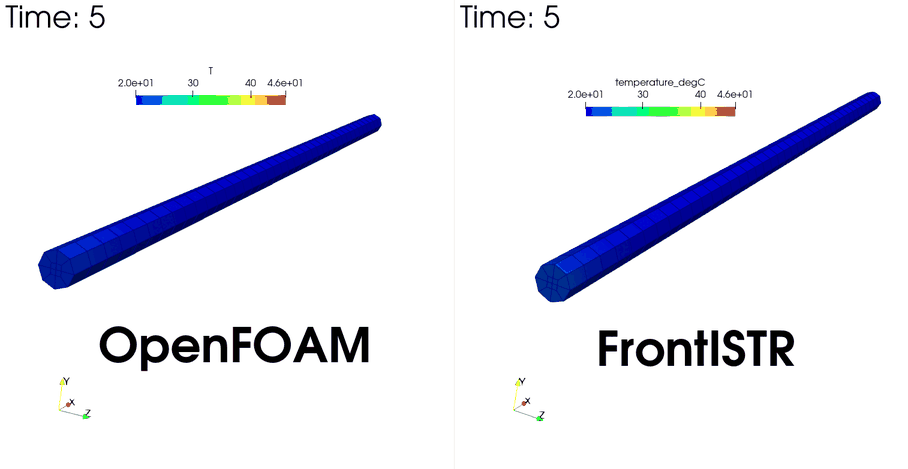
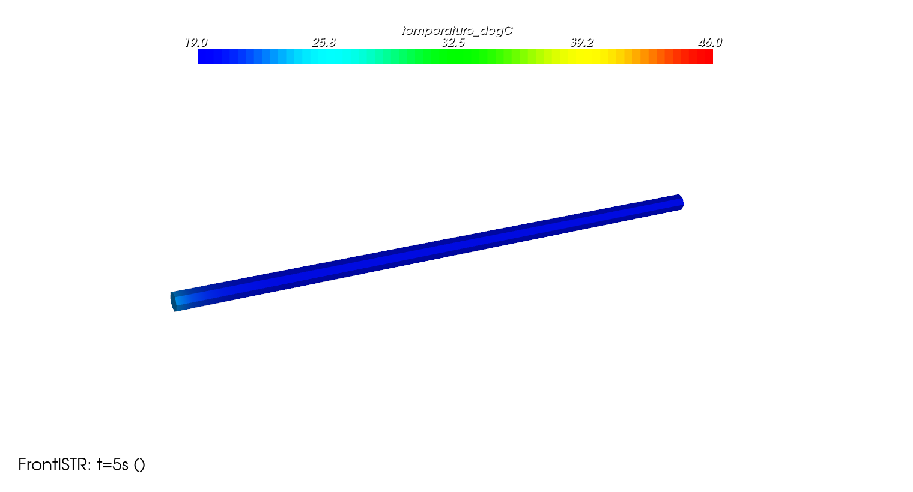
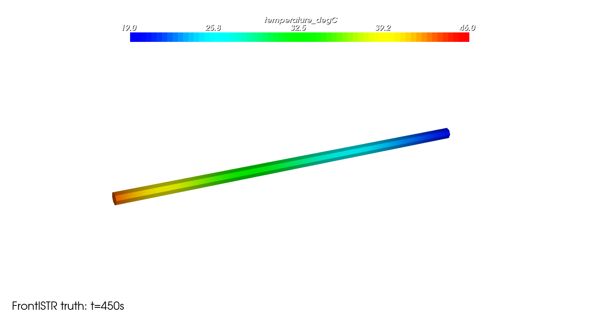
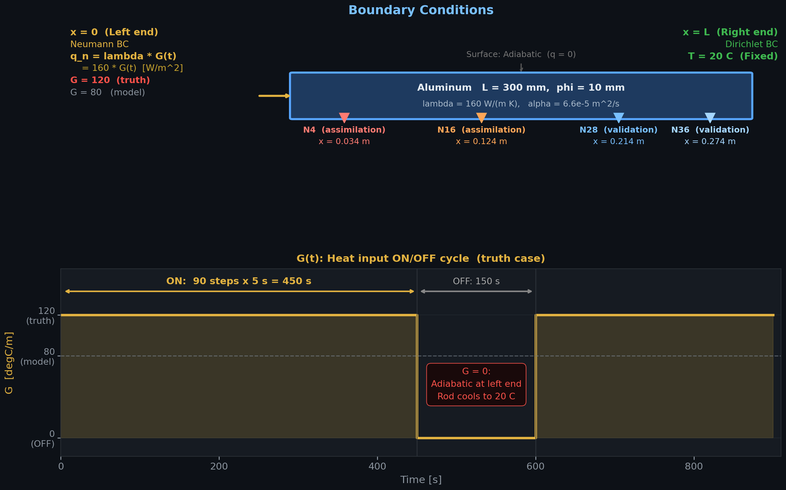
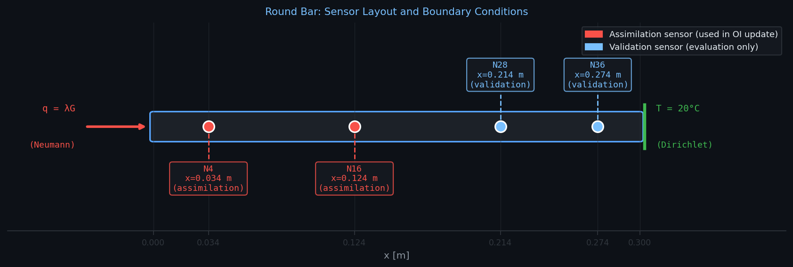
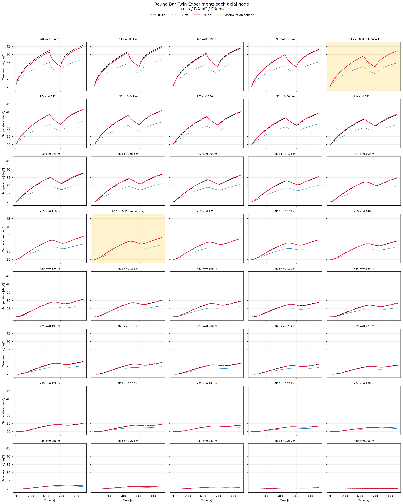
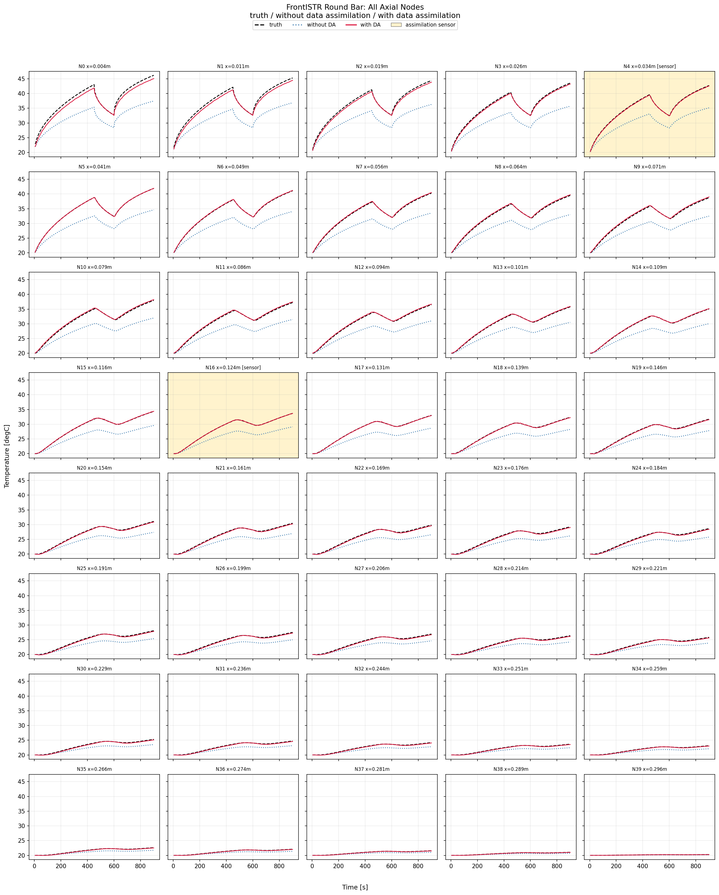
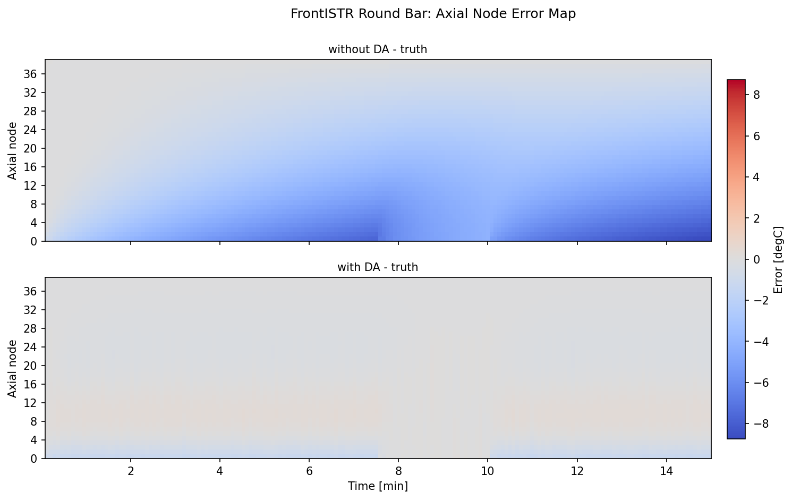
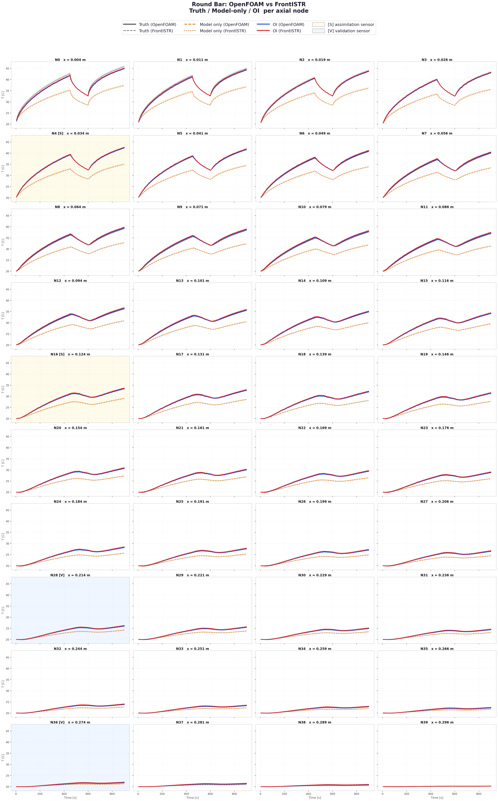

?print-pdf を付けてから、印刷先を PDF にしてください。
1D 相当の丸棒熱伝導を 2 種類のソルバー (OpenFOAM / FrontISTR) で OI データ同化し、温度場推定の精度向上を確認する。
ツイン実験で境界勾配をずらしたモデルを用意し、2 点センサ観測で全節点を OI 補正。RMSE の改善率を計測した。
truth | G=120 degC/m (正解) |
model only | G=80 (補正なし) |
with DA | 2 点 OI 補正あり |

OpenFOAM & FrontISTR — OI データ同化後の温度場アニメーション (時刻は秒で同期)
丸棒モデル / 境界条件・熱入力サイクル / ツイン実験 / OpenFOAM vs FrontISTR の条件統一
OI 式 / H 行列・K ゲイン行列の具体例 / DA ループ / Neumann BC が重要な理由
OpenFOAM +94.6% / FrontISTR +94.0% / 全節点温度グラフ / 両ソルバー比較
センサ配置 / 相関長 / モデルバイアスの性質 / まとめ
| 項目 | 値 |
|---|---|
| 材質 | アルミニウム (A1050) |
| 直径 / 長さ | φ10 mm / L=300 mm |
| 熱伝導率 λ | 160 W/(m·K) |
| 密度 ρ / 比熱 Cp | 2700 kg/m³ / 900 J/(kg·K) |
| 熱拡散率 α | 6.6×10⁻⁵ m²/s |
| 面 | 種類 | 値 |
|---|---|---|
| 左端 (x=0) | Neumann | G = 120 or 80 degC/m |
| 右端 (x=L) | Dirichlet | T = 20 degC |
| 側面 | 断熱 | — |
| ケース | G [degC/m] | 定常 T(x=0) |
|---|---|---|
| truth | 120 | 56°C |
| model | 80 | 44°C |

初期状態 T=20°C (全体一様)

t=450s: 左端から加熱中 (truth G=120)
| パラメータ | 値 |
|---|---|
| DT | 5 s |
| ステップ数 | 180 (900 s) |
| ON/OFF | 90 ON / 30 OFF |
| T_init | 20°C |
(step % 120) < 90 なら G=120、
(step % 120) < 90 なら G=120、それ以外は G=0 (加熱停止)。
G=0 になると左端 Neumann BC の熱流束がゼロ（断熱相当）となり、棒全体が右端固定温度 (20°C) へ向かって冷却される。
これが N0 の温度が途中で下がる原因。
| 項目 | 設定 |
|---|---|
| 方程式 | 熱拡散方程式 (α = DT = 6.6e-5) |
| メッシュ | 円柱: 40×12 = 480 cells |
| 左端 BC | fixedGradient (Neumann) |
| 右端 BC | fixedValue 20.0 (Dirichlet) |
| 側面 BC | zeroGradient |
| 項目 | 設定 |
|---|---|
| 方程式 | 熱伝導方程式 (λ=160, ρ=2700, Cp=900) |
| メッシュ | Hex8 (TYPE=361): 697 nodes |
| 左端 BC | !DFLUX q = λ×G (Neumann) |
| 右端 BC | !FIXTEMP 20.0 (Dirichlet) |
| 側面 | 指定なし → 断熱 (デフォルト) |

| 節点 | x [m] | 役割 |
|---|---|---|
| N4 | 0.034 | 同化 (assimilation) |
| N16 | 0.124 | 同化 (assimilation) |
| N28 | 0.214 | 検証 (validation) |
| N36 | 0.274 | 検証 (validation) |
| パラメータ | 値 |
|---|---|
| 相関長 \(L_c\) | 0.05 m |
| \(\sigma_b\) (背景誤差) | 3.0 °C |
| \(\sigma_o\) (観測ノイズ) | 0.05 °C |
「物理モデルの予測」と「センサ観測」を統計的に最適な方法で融合し、より正確な状態推定を得る手法
\(\mathbf{x}_f\): 背景値 (forecast) ／ \(\mathbf{y}\): 観測値 ／ \(\mathbf{K}\): ゲイン行列
| 項 | DA での意味 |
|---|---|
| \(p(\mathbf{x})\) | 事前分布: モデル予測 \(\mathbf{x}_f\) が従う分布 (\(\mathbf{B}\) で特徴づけ) |
| \(p(\mathbf{y} \mid \mathbf{x})\) | 尤度: 状態 \(\mathbf{x}\) のとき観測 \(\mathbf{y}\) が得られる確率 (\(\mathbf{R}\) で特徴づけ) |
| \(p(\mathbf{x} \mid \mathbf{y})\) | 事後分布: 観測を反映した更新後の状態 \(\mathbf{x}_a\) |
B と R の大小で「どちらを信頼するか」が決まる:
| 記号 | 意味 | サイズ |
|---|---|---|
| \(\mathbf{x}_f\) | ソルバー予測 (背景値) | \(N_\text{nodes}\) |
| \(\mathbf{x}_a\) | OI 補正後の解析値 | \(N_\text{nodes}\) |
| y | センサ観測値 | n_obs=2 |
| H | 観測行列 (センサ位置を 1) | 2 × N_nodes |
| B | 背景誤差共分散 (Gauss 型) | N_nodes × N_nodes |
| R | 観測誤差共分散 (対角) | 2 × 2 |
| K | OI ゲイン行列 | N_nodes × 2 |
距離 \(d_{ij}\) が大きいほど相関が減衰。\(L_c\) が補正の空間的な広がりを決める。
| \(L_c\) | B の形状 | 補正の挙動 |
|---|---|---|
| 大きい | 広域まで高相関 (なだらかに減衰) |
センサ補正が遠方まで波及 → 滑らかだが過補正のリスク |
| 小さい | センサ近傍のみ相関 (急速に減衰) |
局所的な補正のみ → 遠方は修正されない |
P = 状態推定の不確かさを表す行列
Pij が大きい → 節点 i と j の予測誤差が大きく、かつ相関している
対角成分 Pii = 節点 i の分散 (誤差の二乗期待値)
KF では P を毎ステップ更新、OI では P の代わりに固定の B を使用
| 誤差共分散 | 計算コスト | |
|---|---|---|
| KF | \(\mathbf{P}\) を毎ステップ時間発展 \(\mathbf{P}^+ = \mathbf{F}\mathbf{P}\mathbf{F}^\top + \mathbf{Q}\) |
高 (N²オーダー) |
| OI | B を固定 (事前設定のみ) | 低 (K を1回だけ計算) |
今回: 境界条件が定常サイクル → モデルバイアスが時間的に安定 → 固定 B で十分
センサがある 列だけ 1、それ以外は 0。
\(\mathbf{y} = \mathbf{H}\mathbf{x}_f\) は「N4 と N16 の温度を抽出する」操作。
H[0, axial_cell_index(4)] = 1.0H[1, axial_cell_index(16)] = 1.0
K の各行は「観測誤差を各節点に分配する重み」を表す。
K の第 j 列 = センサ j のイノベーションが全節点に与える補正の空間パターン。
| 量 | 意味 |
|---|---|
| \(\mathbf{y} - \mathbf{H}\mathbf{x}_f\) | イノベーション: 観測 − モデル予測 |
| \(\mathbf{K}\mathbf{d}\) | 補正量を全節点に「塗り広げる」 |
| \(\mathbf{x}_a\) | モデル予測 + Gauss 加重補正 |
左端 (x=0) に 一定の熱流束 q = λG を与えて加熱する問題。
| BC 種類 | 意味 | 今回の適否 |
|---|---|---|
| Neumann | q = λG を固定 (flux 指定) | ✓ 物理的に正しい |
| Dirichlet | 温度 T を固定 | × 物理的に不適切 |
Neumann BC は OI との組み合わせでも都合が良い。

黄色背景 = 同化センサ節点 (N4, N16) ／ 横軸: 時間 [s]
| ケース | RMSE |
|---|---|
| OpenFOAM-only | 3.32°C |
| OpenFOAM + OI | 0.18°C |
| 改善率 | +94.6% |
| 節点 | x [m] | 役割 | OI なし | OI あり |
|---|---|---|---|---|
| N4 | 0.034 | 同化センサ | 6.28°C | 0.050°C |
| N16 | 0.124 | 同化センサ | 3.74°C | 0.040°C |
| N28 | 0.214 | 検証用 | 1.75°C | 0.149°C |
| N36 | 0.274 | 検証用 | 0.53°C | 0.045°C |
検証用節点 (N28, N36) も大きく改善 → センサ外への補正伝播が効いている

黄色背景 = 同化センサ節点 (N4, N16) ／ 横軸: 時間 [s]

上: モデルのみの誤差 ／ 下: OI 補正後の誤差
| ケース | RMSE |
|---|---|
| FrontISTR-only | 3.41°C |
| FrontISTR + OI | 0.20°C |
| 改善率 | +94.0% |
| 値 | |
|---|---|
| DA なし RMSE | 3.32°C |
| DA あり RMSE | 0.18°C |
| 改善率 | +94.6% |
| N0 最大温度 (t=900s) | 45.7°C |
| 値 | |
|---|---|
| DA なし RMSE | 3.41°C |
| DA あり RMSE | 0.20°C |
| 改善率 | +94.0% |
| N0 最大温度 | 46.2°C |

黄背景=[S]同化センサ (N4,N16) ／ 青背景=[V]検証節点 (N28,N36)
黒実線=Truth(OF) ／ 灰破線=Truth(FI) ／ 橙破線=Model only(OF) ／ 茶点線=Model only(FI) ／ 青実線=OI(OF) ／ 赤実線=OI(FI)
OI データ同化後の温度場アニメーション (OpenFOAM 左 / FrontISTR 右、時刻は秒で同期)
入力側は Neumann (Flux) BC が必須。Dirichlet 境界は次ステップで補正を打ち消す逆熱流束を生む。
\(L_c\) は熱拡散長 \(\sqrt{\alpha\,\Delta t}\) より大きく、棒の長さより小さい値を選ぶ。
\(L_c = 0.05\,\text{m} \gg \sqrt{6.6\times10^{-5} \times 5} = 0.018\,\text{m}\) ✓
センサ位置とセル/節点番号の対応が 1 対 1 でなければ OI は誤った場所に補正を与える。センサ節点番号とメッシュの対応を事前に必ず確認する。